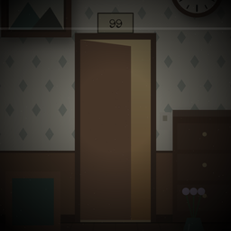

ODA 99
Hiçbir şey değişmediyse ilerle.
Nasıl oynanır?
- Oyuna gizemli bir binanın 1 numaralı odasında başlarsın. İlk oda referans odadır: eşyalara dokunup incele ve ezberle.
- Sonraki odalar aynı görünür ama bazen bir şey değişmiştir: tablo, saat, ayna, gölgeler…
- Bir değişiklik görürsen ona dokun ve “Anomali bildir”e bas. Hiçbir şey değişmediyse “Normal oda” ile ilerle.
- Doğru karar seni bir sonraki odaya götürür; yanlış karar 1 numaralı odaya döndürür. Ulaştığın katlara asansörle dönebilirsin.
- Amaç 99 numaralı odaya ulaşmak ve binanın sırrını çözmek. Gizli notlar farklı sonlara açılır.
Sık sorulanlar
İnternet gerekiyor mu? Hayır, oyun tamamen çevrimdışı çalışır. Liderlik tablosu için Game Center'a giriş yapman yeterli.
Ses gelmiyor. Telefon sessiz modda olabilir; ana ekrandaki ortam sesi ve ses simgelerini kontrol et. Saatin tıkırtısı ipucu verir — kulaklıkla oyna.
Oyunda kan veya şiddet var mı? Hayır. Oda 99 psikolojik gerilim ve tekinsizlik üzerine kurulu.
İletişim
Soru, öneri veya hata bildirimi için: t44mehmet63@gmail.com
Geliştirici: Mehmet TÜRKMEN
SUPPORT
How to play
- You start in Room 1 of a mysterious building. The first room is the reference room: tap things to inspect them and memorise it.
- The rooms after it look the same, but sometimes something has changed: a painting, the clock, the mirror, the shadows…
- If you see a change, tap it and press “Report anomaly”. If nothing changed, press “Normal room”.
- A correct call takes you to the next room; a wrong one sends you back to Room 1. You can ride the elevator back to floors you have reached.
- Reach Room 99 and solve the building’s mystery. Hidden notes unlock different endings.
FAQ
Do I need internet? No, the game works fully offline. Sign in to Game Center to use the leaderboard.
No sound? Your phone may be in silent mode; also check the ambience and sound icons on the home screen. The ticking clock is a clue — play with headphones.
Is there blood or gore? No. Room 99 is about psychological tension and the uncanny.
Contact
Questions, ideas or bug reports: t44mehmet63@gmail.com
Developer: Mehmet TÜRKMEN